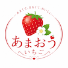
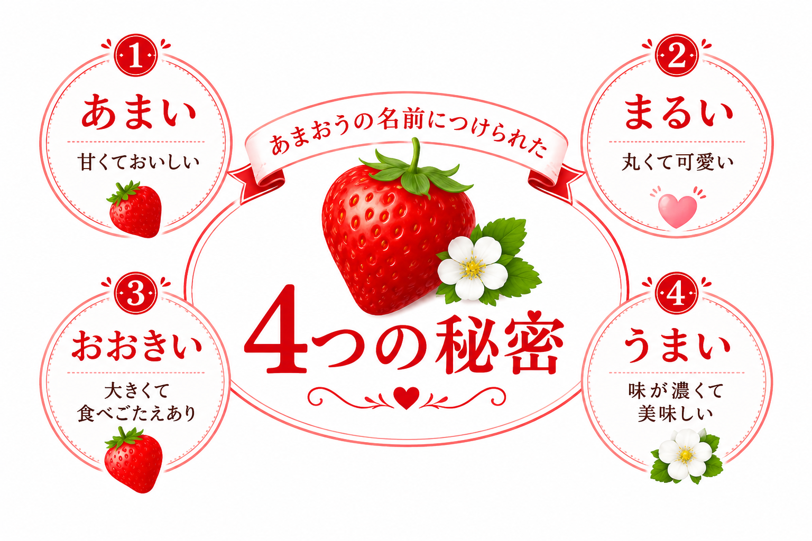

店頭で並んでいるパックを見るときは、以下の4つのポイントをチェックしてみてください。
いちごはヘタ側から先端に向かって熟していきます。 ヘタの根元まで隙間なく真っ赤に染まっているものは、 完熟して甘みが強くなっている証拠です。
ヘタがピンと上を向いて反り返っているものは、 新鮮で元気な証拠です。 逆に、ヘタが乾燥して茶色くなっていたり、 しなびているものは鮮度が落ちています。
表面のつぶつぶ（植物学的には果実）が赤くなり、 まわりの果肉がぷっくりと盛り上がって つぶつぶが沈み込んでいるように見えるものは、 完熟して果汁がたっぷり詰まっているサインです。
あまおうは綺麗な円錐形だけでなく、 扇形に横へ広がったゴツゴツした形のものもあります。 実は、このような不揃いで大きな粒のほうが、 栄養がたっぷり行き届き、甘みが強いことが多いのです。